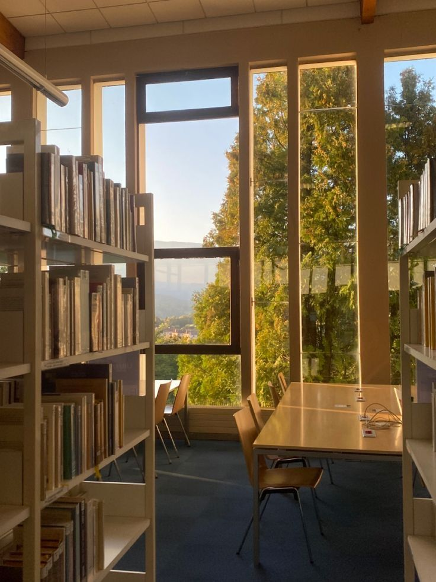

Visit
Form V1 · Visiting
Old Corn Exchange, Kiln Street, Marrowby. Reading room on the ground floor, twelve desks.
Hours
Tuesday to Saturday09:30 – 16:30
Morning session09:30 – 12:30
Afternoon session13:30 – 16:30
Last order for the day14:45, for the 15:30 pull
Sunday, MondayClosed
Closed days
| Date | Reason |
|---|---|
| Thu 24 Dec 2026 | Christmas Eve |
| Fri 25 Dec 2026 | Christmas Day |
| Sat 26 Dec 2026 | Boxing Day |
| Thu 31 Dec 2026 | New Year’s Eve |
| Fri 1 Jan 2027 | New Year’s Day |
In the reading room
| Item | Rule |
|---|---|
| Pencils | Yes. Pens of any kind stay in the lockers. |
| Laptop, tablet, phone | Yes, on silent. Cameras with a permit only. |
| Notebooks and loose paper | Yes. Bags and coats go in the lockers. |
| Food and drink | No. Water in the lobby. |
| Reader ticket | Bring photo ID and proof of address on your first visit. The ticket is free and lasts four years. |
Getting here
BusRoutes 31 and 36 stop at Corn Exchange, 80 m from the door. Every 20 minutes Tuesday to Saturday.
TrainMarrowby station is 900 m away, about 12 minutes on foot along Kiln Street.
ParkingKiln Street car park, 140 spaces, pay and display, £1.20 an hour. Two blue badge bays at the door.
Step-freeRamp at the side door. The reading room and lockers are on the ground floor.
